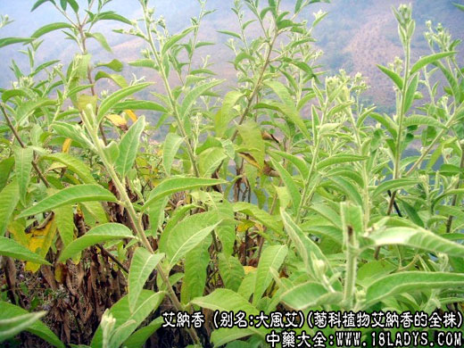
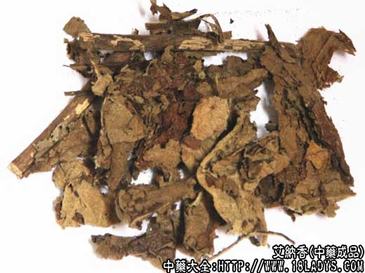
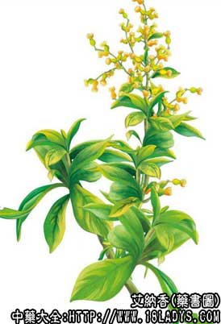

来源：为菊科植物艾纳香的全株。
植物形态：多年生木质草本，高1～2米。全株密被黄色绢毛，有冰片香气。叶互生，椭圆形，先端尖，基部下延成叶鞘，两面被茸毛。头状花序顶生，伞房状；总苞数轮；管状花黄色，缘花雌性，盘花两性。瘦果见棱。花期2～5月。
生于山坡草地、荒土。分布于贵州 罗甸、望谟、册亨及广东、广西等地。
主要化学成分：含挥发油、主要为（L-龙脑、桉叶素、柠檬烯及糖甙等）。
功效与作用：辛、苦，温。温中活血，祛风除湿，杀虫。
临床应用：1、治风热感冒：艾纳香20g，水煎服。2、治风湿疼痛：艾纳香适量，水煎外洗。3、治跌打损伤：艾纳香根、透骨香、见血飞各30g，黑骨藤20g，泡酒服。4、治皮肤瘙痒：艾纳香适量，水煎外洗。
用量：20～50g。